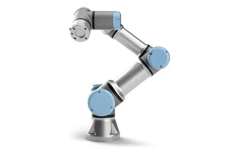

Robô UR3E
O UR3e, da Universal Robots, é um robô colaborativo compacto de seis eixos, projetado para atuar em espaços reduzidos com alta precisão. Ele possui alcance de 500 mm, suporta até 3 kg de carga útil e pesa apenas 11,2 kg, o que facilita sua realocação em diferentes estações de trabalho. Graças à sua instalação rápida (menos de uma hora) e programação intuitiva, pode ser configurado manualmente ou pelo ecrã tátil, sem exigir conhecimentos avançados. Seu diferencial está na rotação infinita do último eixo, ideal para tarefas contínuas como aparafusamento. Equipado com sensores de segurança, pode trabalhar lado a lado com operadores, interrompendo movimentos em caso de contato.

Na parte de programação, o UR3e pode ser integrado com diferentes linguagens. O Python se destaca pela simplicidade e forte uso em IA, visão computacional e ROS (Robot Operating System). Já o C++ é preferido em aplicações que exigem alta performance e controle em tempo real. Outras linguagens também são relevantes: C#, usado em simulações e interfaces gráficas; Java, voltado à portabilidade e sistemas distribuídos; além das linguagens proprietárias, como a RAPID (ABB) e a KRL (KUKA), desenvolvidas para oferecer controle especializado nos robôs de cada fabricante.
Assim, o UR3e combina design compacto, flexibilidade, segurança e integração com linguagens de programação modernas, sendo uma solução estratégica para empresas que buscam automatização inteligente em ambientes da Indústria 4.0.